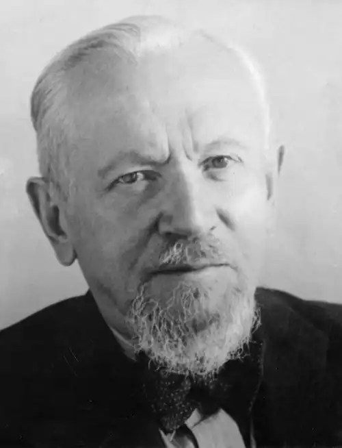

СТАФФ, Леопольд (Staff, Leopold — 14.11.1878, Львів — 31.05.1957, Скаржиско-Каменна) — польський поет.У критиці поезію Стаффа найчастіше вважають своєрідною поєднувальною ланкою, яка зв'язала і водночас розділила два періоди розвитку польської поезії — "младопольський" і міжвоєнного двадцятиліття. Розквіт творчості Стаффа припав на 20—30 pp., коли він виступив як провідний представник неокласицистської течії. Загалом Стафф написав 18 збірок поезій, п'ять п'єс і кілька десятків томів перекладів. Літературі він віддав понад 60 років інтенсивної пращ.
Народився Стафф у Львові. Його батько, власник кондитерської, зумів дати синові пристойну освіту. Спочатку майбутній поет навчався у Львівській класичній гімназії, а з 1897 р. — на факультеті адміністрації та права Львівського університету. Але кар'єра юриста його не приваблювала, тому у 1899 р. Стафф перейшов на факультет романістики, паралельно відвідуючи лекції з філософії та славістики. У стінах університету, у 1898 р., Стафф почав працювати над першою поетичною книжкою "Сни про могутність" ("Sny о potedze"), яка була опублікована у 1901 р. і згодом перевидавалася ще шість разів. Збірка була написана під впливом "младопольської" естетики і найбільше тяжіла до символізму. Водночас Стафф певною мірою вже у першій збірці намагався протиставити свою естетичну програму канонам "младопольської" поезії, заперечуючи її песимізм та душевну розслабленість, яким він протиставляє витлумачену в дусі Ф. Ніцше, енергійну й оптимістичну волю до життя.
Починаючи з 1901 p., коли Стафф у супроводі Я. Каспровича вперше побував в Італії, він майже постійно подорожує. Щороку навесні він приїжджав в Італію, крім того, часто бував у Франції, а в серпні 1903 р. відвідав Київ. Центральний поетичний образ у ліриці Стаффа цих років — це образ юного мандрівника, який шукає край своєї мрії, йдучи до нього крізь морок, сумніви, людське горе, йде туди, де заховане сонце, у місто "вічної золотої весни". Подібними мотивами і настроями пронизані поетичні збірки Стаффа початку 900-х pp.: "День душі" (1903) і "Птахам небесним" (1905). Починаючи зі збірки "Квітнуча гілка"(1908), Стафф заявив про себе як про представника поетичного неокласицизму. Неокласицизм у його віршах визначається, з одного боку, орієнтацією на традиційні, класичні поетичні форми (античні елегії, ідилії, ренесансні сонети, терцини, октави), а з іншого боку, таким ставленням до світу, за якого світ не стільки емоційно "переживається", скільки об'єктивно відображається і раціонально пояснюється: Таке поважненьке в чотири рочки! Босе,На виріст кофточка, спідничка аж по п'яти, —В грузьке багно ступа чи мусить дріботатиМежею вдосвіта — ще не опали й роси.Дві стрічечки вплела собі в куценькі коси, Окраєць в хусточці до пояска прип'ятий,Правицю взброїла прутом — гусей ганяти,В лівиці волоче стебло злотоколосе.А гуси — їх хода, як човна хилитання,І шия в кожної, мов білий знак питання, — Мовляв, не розбереш, чи доглядаєш нас ти,Чи, може, то тебе доводиться нам пасти.Ще кожна й голову оберне щохвилини —Чи не згубила ти пастушої лозини?("Гусярка", пер. Г. Кочура)Стафф, котрий у цей час перекладав Епікура і Петронія, псалми Давида і давньокитайську лірику, твори Й.В. Гете і Р. Тагора, активно насичує свої вірші алюзіями, зверненими до міфологічної античної і біблійної проблематики, до вічних моральних цінностей. Такими мотивами пронизані його поетичні збірки "Посмішки миттєвостей" ("Usmiechy godzin", 1910) і "У затінку меча" (1911). Збірка "Лебідь і ліра" (1914) завершила "львівський" період творчості Стаффа. На початку Першої світової війни він емігрував у Харків. Тут у колі своїх співвітчизників він активно пропагував польську літературу, виступав з лекціями і навіть намагався налагодити випуск періодичного видання, присвяченого питанням польської культури та літератури. У Харкові, вже після встановлення Радянської влади, у 1917 р. Стафф видав збірку "Райдуга сліз і крові" ("Tqcza tez і krwi"), а в 1919 p., вже після повернення до Польщі,— "Польові стежки" ("Sciezki polne"). Обидві збірки ознаменували появу у його творчості громадсько-політичного, соціального пафосу, який не був раніше властивий його поезії. Першу збірку сам Стафф ще називав "Щоденником вражень 1914—1917 pp." У ній у символічній формі виражені два провідні мотиви — катастрофічних наслідків для людства Першої світової війни і ностальгія за батьківщиною. Збірка "Польові стежки "насамперед засвідчила відмову Стаффа від поетики "младопольського" модернізму і його зближення з тією естетичною програмою оспівування повсякденності, яку в цей час висувала поетична група "Скамандр". У перші роки незалежності Польщі Стафф взяв активну участь в організації літературних справ республіки, редагував літературні журнали, виступав як редактор і перекладач бібліотечки "Пантеон", у якій видавав твори видатних світових поетів минулого. У цей час з'явилися і нові його поетичні збірки "Пером сови" ("Sowim piorem", 1921) і "Вушко голки" (1927). В останній збірці відобразилася особиста трагедія Стаффа — смерть прийомної дочки, важка хвороба дружини, смерть друзів. На 30 pp. припадає поява двох збірок поета, які критики вважають найкращими у його спадку. Йдеться про "Високі дерева" ("Wysokie drzewa", 1932) і "Барва меду" ("Barwa miodu", 1936). У цих збірках Стафф продовжує розвивати свою естетичну програму оспівування повсякденності, а центральне місце в обох збірках займає, з одного боку, надзвичайно довершена пейзажна лірика, пов'язана переважно з картинами осені (яку найбільше любив Стафф), а з іншого, — поетична сатира, спрямована, в першу чергу, проти міщанства. В роки окупації Стафф жив у Варшаві. Враження від цих років він передав у збірці "Мертва погода" ("Martwa pogoda"), яка вийшла у 1946 р. і вже самою метафоричною назвою окреслювала основний пафос віршів, який полягав у відтворенні гнітючої атмосфери часів окупації. У повоєнний час численні поетичні заслуги Стаффа. були високо оцінені польською громадськістю. У 1949 р. найдавніший у Польщі Краківський університет присвоїв йому почесний ступінь доктора. У 1951 p. Стафф був удостоєний Державної премії, а в 1955 р. його було нагороджено орденом "Прапор праці". Останні поетичні збірки Стаффа з'явилися у 50-х pp. Це збірки "Верболіз" ("Wiklina", 1954) і "Дев'ять муз", які вийшли друком вже після смерті поета у 1958 р. Стафф помер, не переживши третього інфаркту.